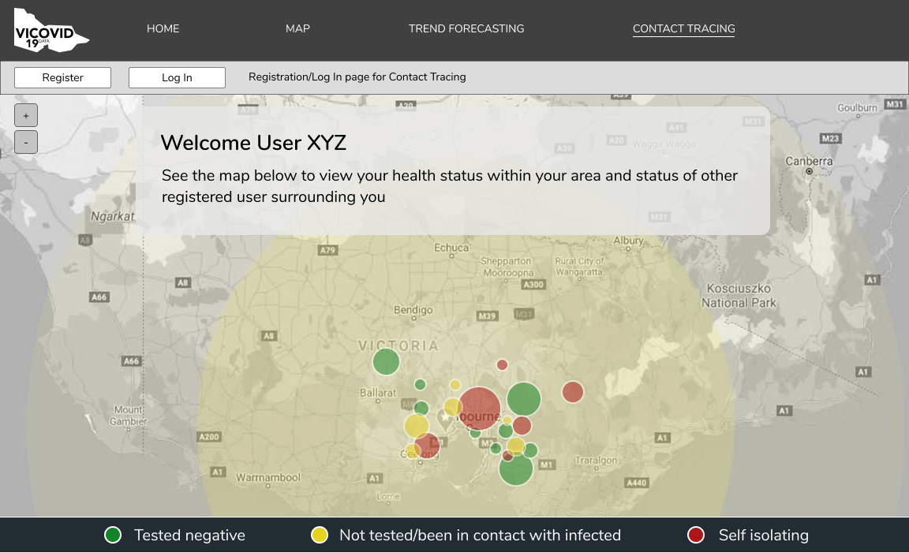
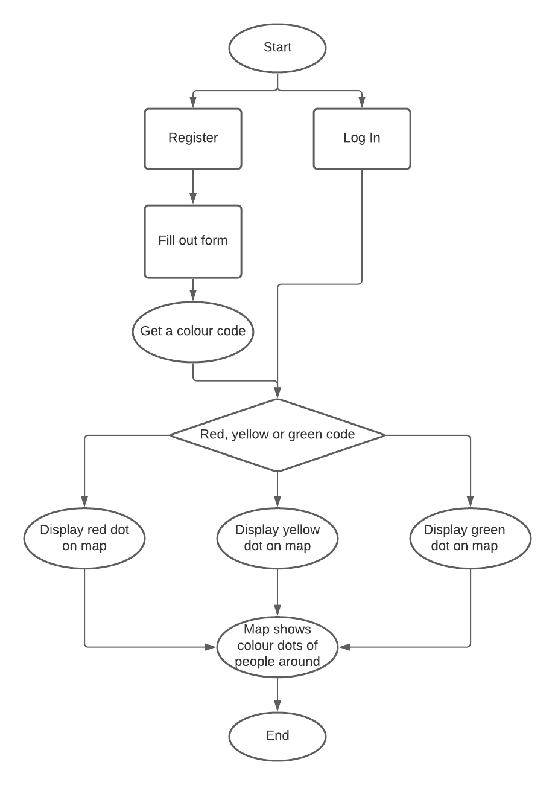

Description
Although the Interactive Map can display infection rate in different places, Contact Tracing allows users to discover the risk levels of people around them.
First of all, users need to register and fill out information such as whether they are infected or not, whether they’ve been to a high infection area etc.
Once they've filled out their information, the system will give them a colour code (there are 3 types: red, yellow and green) which would define their risk level. For example, if a person is tested positive, his/her code would be red, if a person hasn't tested positive but had been to a high risk area and is possible to be diagnosed then he/she gets a yellow code, and if a person is in low risk of being infected then he/she gets a green code.
The system can track the users as they go around in public and they will be displayed with a colour dot with the same colour as their codes on the map. Therefore, they can see other people's colours on the map to judge whether they are around safe people or not.
The system can also get a record of the people that the user had gotten close contact with. If one of the people they got in contact with got tested positive within a few days, the user will be warned by the system that they have a chance to be infected as well and the user can be alerted to take some actions about it such as quarantining or get tested.
User Stories
- As a citizen going shopping on a public transport, I want to know the levels of risk of other people on the same public transport, so that I can be careful.
- As an essential worker, I want to know what type of people I got in contact with when outdoors, so that I can take necessary actions.
Design
Flow Chart
Validation
This feature will be tested on storing user info after registering, and generating the correct colour code after filling out the form. Once registration is done, log in part will be tested. Finally, we will see if the map displays the correct colour dots of the user and people around.